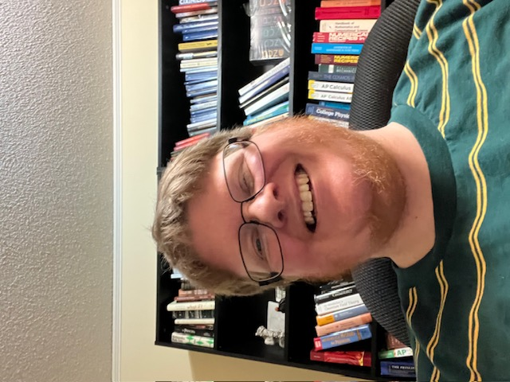
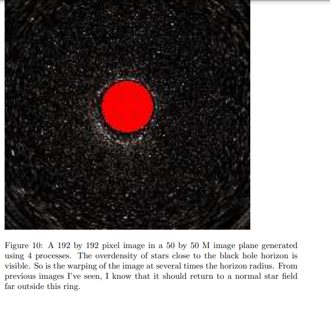
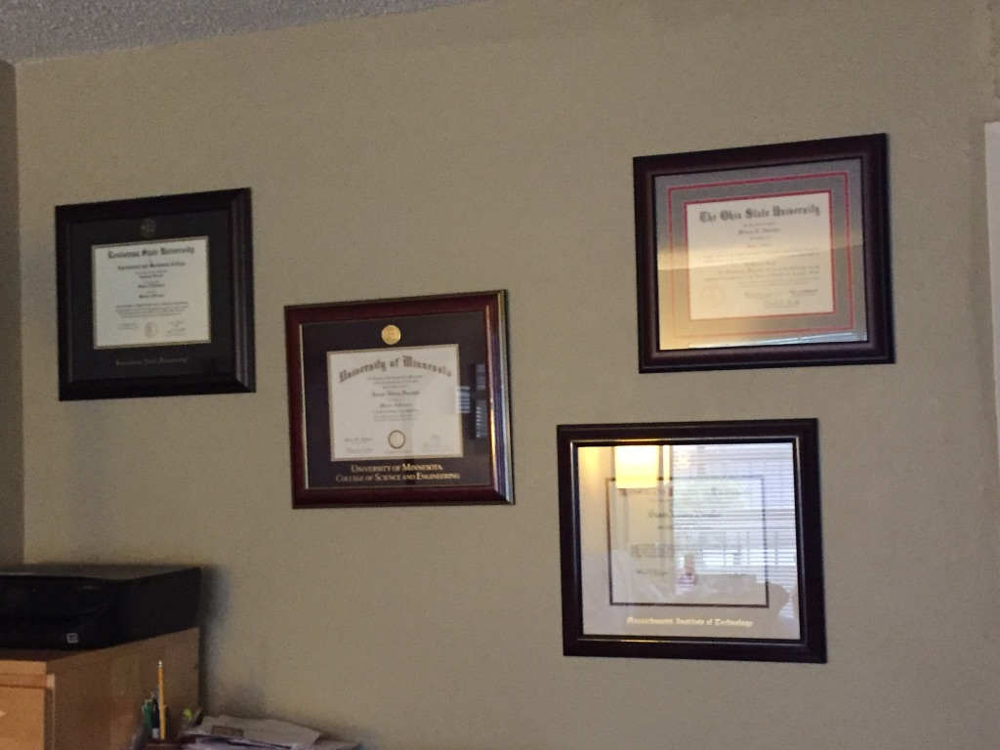

I have had a 15+ year research career in physics and astronomy over the course of my bachelors degree, three masters degrees, and since my final graduation. Most of this (10+ years) has been in computational physics. My primary focus is in general relativity, black holes, and gravitational waves. I have also done research in cosmology, particle physics, neutrinos, exoplanets, the three body Newtonian gravity problem, and fractional calculus.
I have 8 main publications/documents and about 35 total including membership in LIGO spanning the time of the first three detections.
My background is primarily in scientific programming, in the context of data analysis algorithms, experiment development and assessment, and numerical methods for theory.


You can reach me most easily by email:
dorsher@alum.mit.eduOn names and ID: My degrees were granted under the name of Susan Dorsher, which is my legal name (associated with the credit card on this account FYI and I have sent LinkedIn ID in the form of my passport card and MN state ID). The majority of my publications are under Steven Dorsher (please see ORCID or ResearchGate where both names are listed) to reflect the name I have used personally and professionally since 2009. I am a transman/nonbinary, permanently in the middle by both choice and medical necessity. Please, I go by Steven.
This is my real name and identity. I do not have alternate identities. My Guild Wars 2: WaveIn; SWTOR legacy: Dreamstar. FFXIV: will update when I remember. MIT & 90's: eirl; Legend's LARPing in 2000's: Aurbren
In a world obsessed with sexual harassment this should not need to be said, but I am in a ten year long term relationship with a cis man and prior to that was married for ten years, also to a cis man. I have not had other partners in the last twenty years. I am not even remotely interested in being involved with someone else and it is incredibly offensive to confuse LGBTQIA people with prostitutes or pedophiles. That is not what the words transgender, nonbinary, gay, or queer mean. At this time my partner and I are long distance and I have not seen him since 2017 in person. I have been completely true to him. It is also extremely offensive to assume that I am promiscuous, or, even, sexually active, under the circumstances. While I would like a career, you can be certain, I am looking for a job based on my credentials. I would be just as horrified as the average person capable of becoming pregnant to be touched by a coworker non-consensually.
Yes I'm Steven he/him by preference.
Yes I love my partner forever.
Yes my ID is still all female and in my female birth name. No I have not had surgery and have not been on hormones since 2011. Yes I still have a beard. Yes I like my beard.
Why is this confusing?